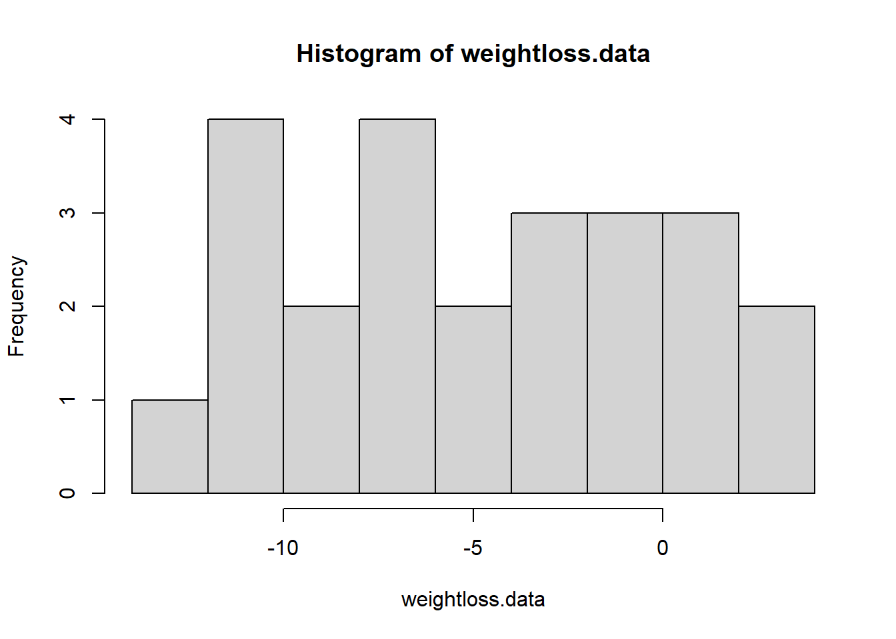
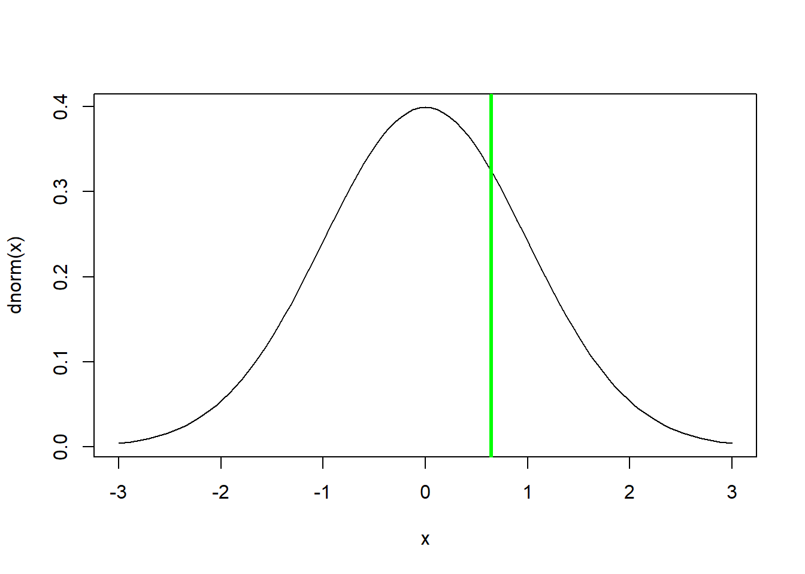

To follow along with the R-based lessons and demos, right (or command) click on this link and save the script to your working directory
Classical linear regression involves testing for a relationship between a continuous response variable and a continuous predictor variable.
The null hypothesis is that there is no relationship between the response variable and the predictor variable in your population of interest. That is, observations with larger values for your predictor variable are not expected to be associated with larger or smaller values of the response variable on average.
Imagine we are testing for a relationship between the brightness of artificial lighting at long stretch of beach (e.g., from hotels and other forms of development) and the total number of hatchling sea turtles per nest that successfully make it to the ocean.
Population: All nests in this particular stretch of beach
Parameter(s): The mean number of hatchlings per nest that successfully travel from their nest to the ocean and how this changes as a function of the brightness of artificial lighting.
Sample: All monitored nests
Statistic(s): Slope and intercept of the linear relationship between the measured response variable (number of successful ocean-arrivers per nest) and the predictor variable (brightness of artificial lighting)
We assume there is some true model out there describing the expected (mean) value of our response variable y as a linear function of our predictor variable x:
\(E(y)= \beta_0 + \beta_1\cdot x\)
To interpret this equation: the true mean of our response variable (\(E(y)\)) is computed by taking the true intercept (\(\beta_0\)) and adding the product of the true slope term (\(\beta_1\)) and our predictor variable. This is just another way of saying that the expected value of the response variable is computed as a linear function of the predictor variable. \(\beta_0\) and \(\beta_0\) are both parameters that we wish to estimate!
To complete the thought, we also assume that there is some “noise” in the system. The “noise” term in regression and ANOVA is also known as the residual error. Specifically, we assume that the noise (residual error) is normally distributed with mean of zero and standard deviation of \(\sigma\).
Mathematically, we are assuming that our data/sample was generated from this process:
\(y= \beta_0 + \beta_1\cdot x + \epsilon\)
OR:
\(y= E(y) + \epsilon\)
WHERE:
\(\epsilon \equiv Normal(0, \sigma)\)
This is actually the same assumption we made for a one-sample t-test!
For a t-test, we assume that there is a true population mean \(\mu\) (equivalent to \(E(y)\)) and that the true “noise” is normally distributed with standard deviation of \(\sigma\).
As with a t-test, where we can only approximate the true population mean by computing the sample mean, we can only approximate the linear relationship between our response and predictor variables:
\(\bar{y} = \hat{B_0} + \hat{B_0}\cdot x\)
Just like any other statistical test, we assume that our observed linear relationship (defined by test statistics \(\hat{B_0}\) and \(\hat{B_1}\)) is just one of many such possible relationships that could have been derived from random sampling from our population of interest. If we collected a different sample, we would get a different linear relationship.
NOTE: in linear regression we are generally far more interested in the slope of the linear relationship (\(\hat{B_1}\) rather than the intercept). So for now, we assume \(\hat{B_1}\) (slope between response and predictor, computed from the sample) is the main test statistic of interest!
So.. what is the sampling distribution for our test statistic \(\hat{B_1}\) under the null hypothesis in this case? Well, the answer is that it (when converted to units of standard error) is t-distributed! Let’s look into this a bit more.
Our discussion of t-tests actually rolls us straight into linear regression. Why? How?
In a one-sample t-test we are interested in estimating the true population mean, and we assume that our t-statistic (i.e., deviation of the sample mean from the null mean, in units of standard error) is t-distributed with degrees of freedom of one less than the sample size.
What is the hypothesis of a typical one-sample t-test? (\(\mu = 0\) - that is, the true mean is zero!)
What is the hypothesis of a linear regression? (Slope = 0 - that is, the true relationship is zero).
So already we are seeing a bit of a similarity.
In a t-test we assume that the population mean is equal to the null mean and that the data are normally distributed. We could write this as (using regression notation):
\(y = \beta_0 + \epsilon\)
WHERE:
\(\epsilon \equiv Normal(0, \sigma)\)
In the above equation, \(\beta_0\) represents the population mean under the null hypothesis.
We approximate our population mean using the sample mean \(\bar{\beta_0}\) (formerly known as \(\bar{x}\)) and we use the CLT and other statistical theories to show that the t-statistic:
\(t = \frac{\bar{\beta_0}-\beta_0}{StdErr(\beta_0)}\)
Is t-distributed with df computed as the sample size minus the number of parameters estimated in the model (there is only one estimated parameter- the sample mean \(\bar{\beta_0}\)).
In linear regression we assume that the mean of our response is determined by two parameters- the intercept and the slope (linear relationship with the predictor variable). The null hypothesis (usually) is that the true mean is defined only by the intercept term and there is no relationship with the predictor variable (slope term is equal to zero).
The slope term of the linear regression can be computed as:
\(\hat{\beta_1} = \frac{\sum_{i=1}^{n}{(x_i-\bar{x})(y_i-\bar{y})}}{\sum_{i-1}^{n}{(x_i-\bar{x})^2}}\)
And the intercept term can be computed as:
\(\hat{\beta_0} = \bar{y} - \beta_1*\bar{x}\)
The standard error of the slope term (as opposed to the standard error of the mean) is computed as:
\(std.err_{\hat{\beta_1}} = \sqrt{\frac{\frac{1}{n-2}\sum_{i=1}^n{\hat\epsilon_i^2}}{\sum_{i=1}^n{(x_i-\bar{x})^2}}}\)
Where the \(\hat\epsilon_i\) refers to the residual errors.
We can then compute a t-statistic for the slope term (difference from the sample slope term and the null slope term in units of standard error):
\(t=\frac{\hat{\beta_1}-\beta_{1null}}{std.err_{\hat{\beta_1}}}\)
Just like with the t-test, we assume that this t-statistic is t-distributed under the null hypothesis. This time the degrees of freedom is 2 less than the sample size (since computing the residual error requires computing two parameters: mean and slope).
Okay let’s consider the sea turtle example from the beginning of lecture:
Imagine we are testing for a relationship between the brightness of artificial lighting at long stretch of beach (e.g., from hotels and other forms of development) and the total number of hatchling sea turtles per nest that successfully make it to the ocean.
Population: All nests in this particular stretch of beach
Parameter(s): The mean number of hatchlings per nest that successfully travel from their nest to the ocean and how this changes as a function of the brightness of artificial lighting.
Sample: All monitored nests
Statistic(s): Slope and intercept of the linear relationship between the measured response variable (number of successful ocean-arrivers per nest) and the predictor variable (brightness of artificial lighting)
First we will simulate some data under a known process model:
eggs.per.nest <- 100
n.nests <- 15
light <- rnorm(n.nests,50,10) # make up some light pollution values (predictor var)
probsucc <- function(light){ # egg success as a function of light pollution
plogis(1.5-0.01*light)
}
hatchlings.successful <- rbinom(n.nests,eggs.per.nest,probsucc(light)) # determine number of successful eggs (response var)
#curve(probsucc,0,100)
plot(hatchlings.successful~light) # plot the data
Now that we have data, let’s run a linear regression!
slope <- sum((light-mean(light))*(hatchlings.successful-mean(hatchlings.successful)))/sum((light-mean(light))^2)
intercept <- mean(hatchlings.successful) - slope*mean(light)
exp.successful <- intercept+slope*light # expected number of eggs for each observation
residuals <- hatchlings.successful-exp.successful
stderr <- sqrt(((1/(n.nests-2))*sum(residuals^2))/(sum((light-mean(light))^2))) # standard error
t.stat <- (slope-0)/stderr # t statistic
pval <- 2*pt(t.stat,n.nests-2) # p value
############
# use lm function instead (easy way!)
model <- lm(hatchlings.successful~light)
summary(model) # get the same t stat and p-value hopefully!##
## Call:
## lm(formula = hatchlings.successful ~ light)
##
## Residuals:
## Min 1Q Median 3Q Max
## -11.1861 -1.9268 -0.3609 2.0089 7.7926
##
## Coefficients:
## Estimate Std. Error t value Pr(>|t|)
## (Intercept) 91.4235 9.0816 10.067 1.67e-07 ***
## light -0.3567 0.1839 -1.939 0.0745 .
## ---
## Signif. codes: 0 '***' 0.001 '**' 0.01 '*' 0.05 '.' 0.1 ' ' 1
##
## Residual standard error: 5.147 on 13 degrees of freedom
## Multiple R-squared: 0.2244, Adjusted R-squared: 0.1647
## F-statistic: 3.761 on 1 and 13 DF, p-value: 0.07446############
# plot regression line!
plot(hatchlings.successful~light) # plot the data
abline(intercept,slope,col="blue")
mod <- lm(Volume~Girth,data=trees)
summary(mod)##
## Call:
## lm(formula = Volume ~ Girth, data = trees)
##
## Residuals:
## Min 1Q Median 3Q Max
## -8.065 -3.107 0.152 3.495 9.587
##
## Coefficients:
## Estimate Std. Error t value Pr(>|t|)
## (Intercept) -36.9435 3.3651 -10.98 7.62e-12 ***
## Girth 5.0659 0.2474 20.48 < 2e-16 ***
## ---
## Signif. codes: 0 '***' 0.001 '**' 0.01 '*' 0.05 '.' 0.1 ' ' 1
##
## Residual standard error: 4.252 on 29 degrees of freedom
## Multiple R-squared: 0.9353, Adjusted R-squared: 0.9331
## F-statistic: 419.4 on 1 and 29 DF, p-value: < 2.2e-16We must assume: Linear model – best model will have least square fit to the data. Independence Equal variance (homoscedasticity, or lack of heteroscedasticity) Normal distribution x-values are correct – the error is associated with the y value, not x.
The goal of linear regression is to model the relationship between some response variable (dependent) and an explanatory variable (independent). You can have multiple explanatory variables… hence you can have multiple linear regression. We will focus on simple linear regression here.
The model is unknown but parameters of the model are estimated from the data, plus error (as seen above). Models are fitted using “least squares” approach. The best fit model minimizes the sum of the squared residuals. DRAW THIS OUT
In order to calculate a regression, we must know the slope and the intercept.
Explore all four possible outcomes of linear regression: non-significant p/ high r, significant p/ low r, and significant p/high r and nonsignificant p/low r/.
Show anscombe’s quartet. Use anscombe’s quartet as jumping off point to explore R output associated with regression.
Plot your regression object. See what comes out:
plot(ellem) Hit
to see next plot:
First up, residuals vs fitted plot. What is a residual? It’s the yi-ybar above. Remember, this is always on the y. This figure tests the assumption of whether the relationship between your variables is linear - Is there equal variance along the regression line? It’s “good” if you have no real shape to the data, no clear outliers, and symmetrical around the dotted “0” line.
Next up: Q-Q plot: plots your data relative to the normal distribution. The y-axis is the residuals. The x-axis is the percentile of your data. 0 is the 50th percentile of your data. The 95th percentile would be 1.64. It’s “good” if your data line up along the dotted line, without getting too far away. Your data would not be normally distributed if they got really far off. It’s subjective. There are tests for this, though!
Next: Scale-Location plot: This also tests for homoscedasticity. Are the residuals spread evenly along the ranges of predictors (the x-axis)? If not, you’ll get a strong trend and generally see a cone-shaped pattern.
Finally: Residuals vs Leverage. This tests if any data points are exhibiting a strong pull on the data. It includes an estimate of “Cook’s distance” - an indicator of outlier-ness. NOTE: Not all outliers actually exhibit a pull on your linear regression. It depends where it’s located. In this plot, pattern is not relevant – you need to look for data points that fall outside Cook’s distance.
These four figures, in sum, should be a guide to interpreting how robust your regression is. You need to be the scientist. Analyze these plots and make decisions about what you’re willing to accept.